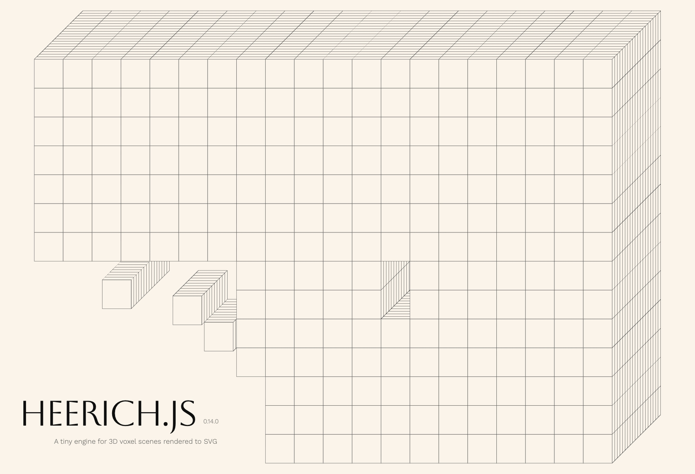

heerich.js
- Лендинг
- Сервисы и приложения
- Инструменты разработчика
- Разработчикам
- Дизайнерам
- Минимализм
- Утилитарный техно
- Светлая тема
- Нейтральный фон
- Генеративная графика
- Визуализация данных
- Микроанимации
- Vite
- Google Fonts
- Английский язык
- Действующий сайт

Что это
Интерактивная документация heerich.js — маленького движка, который собирает трёхмерные воксельные сцены и превращает их в чистый SVG. Слева — панель камеры и стиля, в центре — большая изометрическая сетка, снизу — пояснения и примеры кода. Сайт-документация движка, рендерящего воксельные сцены в чистый SVG.
Что смотреть в первую очередь
Покрутить камеру и стиль в левой панели, затем прочитать, как воксели превращаются в SVG.
Приёмы
- Генеративная графика
- Визуализация данных
- Микроанимации
Интересные факты
- Первый экран — огромная изометрическая сетка на кремовом фоне; внизу слева крупно HEERICH.JS и версия 0.14.0.
- Слева панель настроек: камера (oblique, perspective, orthographic, isometric), угол, дистанция, рамка и вращение.
- Вторая панель отвечает за стиль: заливка, обводка, толщина, зазор, контур и цвет обводки.
- Движок строит воксельные объёмы, вырезает пустоты и применяет булевы операции, а результат отдаёт как SVG.
- Вдохновение — геометрические картонные скульптуры Эрвина Хериха; на странице есть примеры кода и пояснения по API.
- Страница собрана как небольшое приложение с Vite и Google Fonts; зависимостей у самого движка нет.
Паспорт
- Домен
- meodai.github.io
- Тип сайта
- Лендинг
- Категории
- Сервисы и приложения
- Подкатегории
- Инструменты разработчика
- Для кого
- Разработчикам, Дизайнерам
- Стиль
- Минимализм, Утилитарный техно
- Язык
- Английский
- Страна
- не указано
- Автор
- meodai
- Год
- не указано
- Добавлен в коллекцию
- 21.11.2026
Палитра
-
#FBF4EA— 91% кадра -
#CFCBC3— 4% кадра -
#A49F98— 4% кадра -
#86827A— 1% кадра -
#10100F— 0% кадра
- Режим
- Светлая
- Цвет фона
- Нейтральный
Технологии
- Vite
- Google Fonts